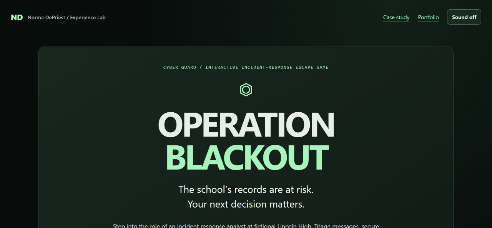
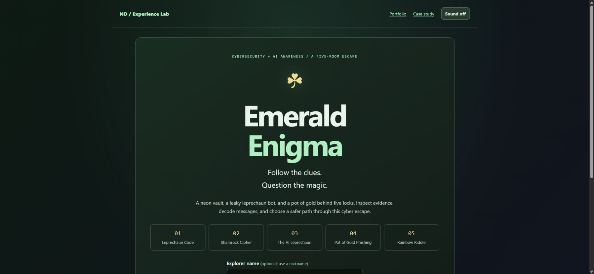

Decisions become practice.
My projects span career exploration, cybersecurity games, responsible AI scenarios, and tools that help learners show what they can do. Each example below identifies the experience, implementation, and current stage.
Sojourner Labs: workplace decisions under pressure

The need
Give people practice recognizing everyday cyber and AI risks in the context of their work.
What I built
Five workplace missions built around distinct professional roles and 21 fictional evidence cards. A reusable JavaScript engine connects scenario progression, contextual hints, scoring, simulated consequences, decision records, replay, and completion certificates.
The evidence
All five missions were checked through their complete room sequences and completion certificates in a public-browser review. Public checks covered all 21 decisions, completion certificates, decision debriefs, wrong-answer recovery, contextual hints, replay, and keyboard-operated choices. The narrow-screen layout was also reviewed.
One mission, five workplace situations
Play Voice of the CEO, The AI Policy, Locked Out, and The First Hour alongside Brightline Breach. These scenarios cover impersonation, AI information handling, authentication, and incident response. Employer record delivery, payment flows, organizational adoption, and learning effectiveness are not claimed as tested outcomes.
Operation Blackout / Cyber Guard
A fictional school incident turns cybersecurity concepts into decisions. Players classify messages, create a practice passphrase, decode a historical cipher, investigate a traffic pattern, and authorize a simulated recovery. The experience connects introductory technical practice with the reasoning behind workplace decisions.

Experience design
Five linked challenges, contextual hints, actionable feedback, visible progress, and a final debrief connecting each decision to real work. Untimed practice supports exploration; a 10-minute challenge adds time and integrity constraints.
Technical implementation
React and TypeScript, explicit state transitions, guarded progression, pause and restart, optional Web Audio, keyboard controls, and responsive CSS. A static production build runs without an account, backend, or API key.
Verified behavior
Browser playthroughs reach Mission Success through all five stages. Checks cover incorrect answers, the three-email progression gate, hints, timed failure, pause, restart, and narrow-screen layout.
Design decisions that matter
Every email must be reviewed before advancing. Incorrect choices explain what to reconsider. Practice mode removes penalties; the challenge ends when time or simulated integrity reaches zero. The recovery task emphasizes preserving evidence and restoring validated backups.
This is an introductory simulation, not a production security tool. The cipher is a puzzle mechanic and the passphrase task checks length only. Learning effectiveness and transfer to workplace performance have not yet been evaluated.
Make learning visible to an employer.
The cybersecurity playbook template organizes student work into eight knowledge areas, with crosscutting concepts including risk, adversarial thinking, systems thinking, and responsible AI. It connects lab artifacts with credentials, reflection, and a professional portfolio.
The repository includes reusable artifact instructions, Markdown pages, a Jekyll layout, and CSS. The public student-template preview renders its home and playbook content, but some navigation requires deployment-path configuration. It is presented as an instructional starter, not a completed student portfolio or evidence that every sample lab is my own work.
Read the template and instructions ↗Emerald Enigma: follow the clues, question the magic.

A themed escape experience connects code inspection, a historical cipher, a deliberately leaky scripted chatbot, phishing recognition, and a final riddle. Each unlocked room reveals a short explanation connecting the puzzle with safer real-world practice.
Experience design
Five connected locks, visible progression, two hints per room, actionable feedback, untimed exploration, pause/resume, and a final debrief.
Implementation
A self-contained JavaScript module, responsive CSS, native keyboard controls, optional synthesized audio, input normalization, and local best times. No account, external assets, or AI API is required.
Verified behavior
Full five-room playthrough to Vault unlocked, incorrect-answer recovery, hint use, a phishing reporting gate, pause/resume, and replay. Chat input renders as plain text; the sample phishing address is inert.
The chatbot is explicitly rule-based. The cipher and riddle are puzzle mechanics; this introductory activity does not establish professional security competence or measured learning transfer.
How this connects to workforce readiness
My design practice uses industry frameworks, including NIST NICE, to connect experiences with work-related tasks, knowledge, and skills. These projects demonstrate scenario design, feedback, implementation, and evidence-building. Formal evaluation of learning transfer remains a separate research step.
Explore the research approach →